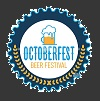

Oktoberfest is a world-renowned festival held annually in Munich, Germany, known for its lively atmosphere, traditional Bavarian culture, and of course beer. This site will show some of the most beautiful visited places here. Also, you will see history, where and when the first Oktoberfest was held.
- Everything started in 1810, the first Oktoberfest festival was held on October 12, 1810, to celebrate the marriage of Crown Prince Ludwig of Bavaria to Princess Therese of Saxe-Hildburghausen. The citizens of Munich were invited to join in the festivities, which included horse races. The event was such a success that it was decided to hold it again the following year.
- After some years, the festival began to evolve, with the introduction of carousels and swings. Small beer stands appeared, which eventually grew into large beer tents and halls.
- In 1910, the 100th anniversary of Oktoberfest was celebrated with an estimated 120,000 liters of beer consumed.
- From 1914 until 1918, and from 1939 until 1945, Oktoberfest was canceled because of World War I and World War II. After WWII, it resumed in 1946 but was called the "Autumn Festival" until 1948.
- A new tradition, "It is tapped," began with the mayor of Munich tapping the first keg of beer.
- The festival became increasingly popular with international visitors.
- In 1980, a big tragedy occurred when a bomb exploded at the main entrance, resulting in 13 deaths and over 200 injuries.

- Oktoberfest continues to thrive, attracting around six million visitors each year from all over the world. The festival typically lasts 16 to 18 days, starting in late September and ending on the first Sunday in October.
- Oktoberfest is not only about beer; it showcases Bavarian culture, including traditional music, folk dances, and costumes like lederhosen and dirndls.